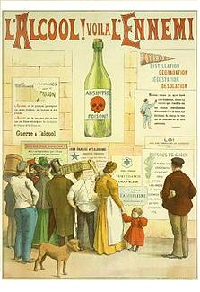
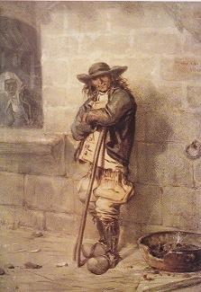
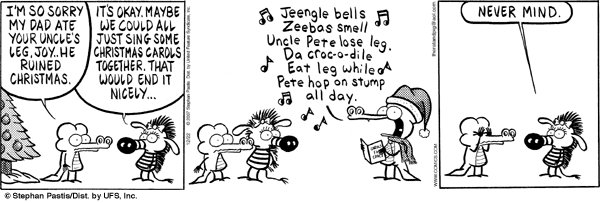

Une bonne leçon
Let that be a lesson to all of us!
Dialecte de Cornouaille
|
Confirmé par l'"Argument" dès 1839, où l'auteur est appelé "Loeiz Kamm", Louis le Boiteux et par le chant lui-même, où Guivarc'h est orthographié "Gwivar". Le héros de l'histoire, Yann Marec, est le mari de la mendiante Marie Le Bris qui apprit à LV le chant Marquis de Guérand . |
Corroborated by the "Argument" to the song from 1839 onwards, where the author is referred to as "Loeiz Kamm", Lame Louis and by the song itself, stanza 44, where Guivarc'h is spelt "Gwivar". The hero of the present story, Yann Marec, is the huband of the beggar woman Marie Le Bris who sang the ballad Marquis de Guérand . |
Mélodie - Tune
(cf. ar plac'h dimeet gant Satan )
| Français | English |
|---|---|
|
I
1. Ecoutez, Bretons, je vous prie, Ce qui vient d'arriver, (bis) 2. Ce qui est arrivé à Jean Marec De la paroisse de Nizon aux environs de Noel. 3. Nous faisions des coupes, ce matin-là Devant le manoir, dans le champ neuf. 4. -Jean Marec, où étiez-vous, Que vous arriviez si tard? 5. Où êtes-vous allé cette nuit, Boire du cidre doux, n'est-ce pas? 6. -Sacrebleu! Cette nuit je fus Où Dieu a voulu que je sois pour mon bien. - 7. Et un autre lui disait: - Le fait est que vous êtes un peu ivre, Jean. 8. - Le fait est que j'ai bu une bolée. Sacrebleu! Qu'elle était bonne! 9. Comme de l'eau de vie, et de la meilleure! Et elle m'a mis du baume au cœur!- 10. Vous vous laissez aller, lui dit Louis-le Boiteux, Pour vous laisser ainsi aller, pauvre Jean, vous êtes bien jeune. 11. Il avait beau lever sa houe C'est sa tête qui frappait le sol. 12. - A quoi bon demeurer ici? Je vais chercher un morceau de pain. - 13. Et il disait, en cheminant En direction de son logis, il disait entre ses dents: 14. - Ce cidre doux était bien bon! J'aurais pu en boire dix bolées! II 15. Votre père n'est pas rentré? - Non. Il sera allé à Quimper; 16. A Quimper, ou bien à Alger: Il disait qu'il voulait faire le voyage. 17. Quatre semaines passèrent Il n'était toujours pas rentré. 18. Il n'était toujours pas rentré Lorsqu' arriva Noël. 19. Le jour de Noël, dans la soirée, Vinrent chez lui des jeunes hommes de Saint-Maudé. 20. - Bonsoir, toute la famille, Vous avez de la toile à vendre par ici? 21. - Plus un morceau à vendre ici. On a tout vendu cette année. - 22. Et ils quittèrent le Lonch-dall Et s'en revinrent en faisant les fous. 23. Ils allaient entrer dans le bois: - Regardez, dans la neige, des traces de lièvre! 24. - Des traces de lièvre, ça, jamais de la vie! Je dirais plutôt, des traces de renard. 25. Et les voilà qui suivent les traces: - Voilà toujours un vieux chapeau! 26. Il est tout blanchi par le gel. C'est celui de Jean Marec, je crois. 27. - C'est là le chapeau de votre père, Laurent? - Non, pas que je sache. 28. Puis, à deux, ils sont retournés au bois, Et ils y ont trouvé des braies. 29. Des braies, plus loin, au milieu du bois. Elles étaient déchirées, avec du sang dessus. 30. -Ce sont ses braies et son chapeau! Et Louis Pilorsy courait devant. 31. (Et un vieux corbeau coassait Au haut d'un arbre au coin du bois.) 32. Et Louis de hurler en proie à l'épouvante: - Mon Dieu, le voilà! III 33. Jean Marec était couché dans la neige Et il gisait face contre terre. 34. Il avait les mains jointes sur la tête; Et ses cheveux blancs lui tombaient sur les yeux. 35. Dévorés avaient été son ventre et sa poitrine Par les loups, jusqu'à son cœur. 36. Il n'y avait que son front qui fût épargné. Par la vertu du baptême. 37. On alluma un feu dans le bois qui brûla toute la nuit, Avec, à côté du mort, sa pauvre vieille femme. 38. Agenouillée, elle pleurait. Avec ses enfants tout autour. 39. Ils restaient pour le veiller. Et le lendemain le maire de Nizon arriva. 40. Et le fossoyeur vint chercher le corps Avec une jument et un cercueil. 41. Et il le porta au cimetière Sans son de cloche ni prêtre. 42. Sans son de cloche ni prêtre Et sans croix ni eau bénite. 43. Et il le jeta dans la fouille froide Tout en gardant son chapeau sur la tête. 44. Louis Gwivar, dit Louis le Boiteux A composé la gwerz que voici. 45. Cette gwerz qu'il a composée, Puisse-t-elle être une leçon pour chacun! |
I
1. O, listen, Bretons, if you please, I'll tell you of a Nizonese (twice) 2. Listen what Yann Marek befell Last Christmas! That's what I shall tell. 3. Beside the manor, that morning, There had been new land reclaiming. 4. - John Marec, where have you been? Say! Why do you come with such delay? 5. Spent the night in some smoky room Drinking new cider, I presume? 6. - Confound it! This night I've been where God had decided that I were. - 7. And somebody else asserted: - Yann, you are a bit besotted! 8. - I drank a bottleful, I did! A thing that God does not forbid! 9. Good it was! As good as brandy! To my heart it was like candy! 10. - You will die soon, Lame-Louis said, Though you're not that old, I'm afraid. - 11. Try as he would, it was his head That struck the ground in his hoe's stead . 12. - Nothing doing! I must be fed! I'll go and fetch some piece of bread.- 13. And, as he went home, he was heard, Grumbling to himself, word for word: 14. - This cider was good, and no doubt, Was worth a real drinking bout! II 15. - Where is your father? Not yet back? - Gone to Quimper. We lost his track. 16. To Quimper or else to Algiers. He has wished to go there for years. - 17. Four weeks went by. Now, was he still Beyond the sea, beyond the hill? 18. He was still missing and away When arrived the Christmas day. 19. In the evening of Christmas day Two young lads came from Saint-Maudé. 20. - Good afternoon, so said they both. Have you got to sell us some cloth? 21. - No, to sell we have nothing here. For all was sold during the year. - 22. The young men left the Lonch-dall house And went on their way, to carouse. 23. Near the wood, one cried: "Hey, look there! Look, in the snow: tracks of a hare! 24. - They don't look like tracks of a hare. These are tracks of a fox, I swear. 25. Was it a fox? Was it a rat? They follow and they find ... a hat! 26. - An old hat! That's all white with frost Which, I think, Yann Marek has lost. 27. - Is this, Lawrence, your father's hat? Oh, my God, I would not say that! - 28. When, later on, the both came round To the wood, old breeches they found. 29. Breeches they found, amidst the wood That were torn and all stained with blood. 30. - His breeches and his hat! - so said Louis Pilorsy who ran ahead. 31. (An old raven cawed, loud and grim Atop a tree on the wood's rim.) 32. And Louis set shrieking in dismay: - Oh my God! Here is where he lay! - III 33. John Marec lay deep in the snow With his face to the ground, below. 34. His folded hands over his head. His white hairs over his eyes spread. 35. Wolves had devoured stomach and chest And, up to his heart, all the rest. 36. Only his forehead they had spared, Thanks to baptism unimpaired. 37. They decided a fire to make And his wife came the dead to wake. 38. His old wife was kneeling and cried All her children were by her side. 39. And they spent all the night waking. The mayor of Nizon next morning 40. Had the gravedigger fetch the corpse In a coffin, drawn by a horse. 41. And to the churchyard he was brought No bell was tolled, no rite was wrought. 42. Without bell tolling or vicar Without cross or holy liquor. 43. Into the cold hole he threw John And, doing this, kept his hat on. 44. Lame Louis, alias Louis Gwivar, Made this song. A true believer, 45. He made this lament. All of us May this lesson help to progress! Translated Christian Souchon (c) 2007 |
Cliquer ici pour lire les textes bretons.
For Breton texts, click here.

|
 RésuméUn vieil ivrogne, après avoir passé la nuit à boire, vint le matin travailler au champ. Moqué par ses camarades et bien incapable de prendre part à leurs travaux, il quitta bientôt son ouvrage. Mais en retournant chez lui, il fut frappé d'apoplexie, alors qu'il traversait un bois. Sa femme et ses enfants crurent qu'il était parti chercher de l'ouvrage hors de la commune. Son corps fut découvert deux mois plus tard, le 26 décembre 1836, à demi dévoré par les loups. Sa mort fut regardée par le peuple comme une punition du ciel et le clergé lui refusa la sépulture ecclésiastique. Ceci illustre le dicton: "Dor an ostaleri a zigor war ar vered" (la porte du cabaret ouvre sur le cimetière). Cette gwerz qui fait allusion à la conquête de l'Algérie était récente lorsque La Villemarqué la recueillit. Elle montre comment le génie paysan transforme un fait divers en véritable épopée. Francis Gourvil a retrouvé l'acte de décès de Jean Marec, 63 ans, né à Pont Aven de parents inconnus, dressé le 26 décembre 1836. Il indique que le malheureux est mort "près de Loge-David (appelée "Loge Daye" dans les Tables) , hier à deux heures du soir". L'une des deux versions est donc fausse! Le barde Louis Guivarc'h Dans l'Introduction à son ouvrage, La Villemarqué s'étend assez longuement sur la description de l'auteur de cette poésie (page LXXIV). "Au fond de la Cornouaille, vivait, il y a peu de temps encore, en une chaumière isolée, un pauvre paysan appelé Loeiz Guivar, qu’une infirmité avait fait surnommer Loeiz-Kam ou Louis le Boiteux ; il représentait physiquement trait pour trait, mais au sérieux, le nain fameux du roi François 1er : il était doué d’une intelligence remarquable ; son humeur était douce, calme et parfaitement égale ; il était poète ; il savait en outre par cœur un très-grand nombre de chansons, et bien qu’il passât pour un peu sorcier, ses mœurs avaient toujours été d’une sévérité irréprochable. Les anciens bardes, on s’en souvient, se vantaient aussi d’être sorciers et n’en étaient pas moins de fort honnêtes gens. Quoi qu’il en soit, les connaissances magiques vraies ou supposées de notre poète, vieux secrets traditionnels que lui avait enseignés son grand-père, jointes à sa probité personnelle, lui avaient donné dans sa paroisse Une certaine autorité morale ; on venait le consulter : ses avis avaient du poids ; ses jugements étaient en général sanctionnés par l’opinion publique, et ses chants contenaient des enseignements utiles qui se gravaient dans les esprits. Or il est un vice auquel le paysan breton, habituellement sobre, se livre volontiers aux jours de fête. La destruction de ce vice commun à tous les peuples de race celtique , et qui parait avoir été jadis autorisé par leurs lois religieuses, est devenue, depuis l’établissement du christianisme, l’objet des efforts persévérants non-seulement du clergé, mais des bardes eux-mêmes. Ses épouvantables suites jetèrent la consternation dans la paroisse du poète : témoin de l’événement, il en fit une ballade « pour l’enseignement de chacun, » comme il nous le dit lui-même ; et son œuvre produisit un effet tellement salutaire, que le nombre des habitués de taverne paraît avoir beaucoup diminué dans le canton qu’il habitait. La Note du Manuscrit de Keransquer Les collecteurs contemporains insistent sur l'importance de noter ce qui est dit par leur informateur à propos de la pièce de tradition orale qu'ils recueillent. Cela n'avait pas échappé non plus au jeune La Villemarqué qui a consigné page 262, de son cahier, les rumeurs superstitieuses que l'événement avait fait naître: Cette dernière remarque introduit une réflexion qui est développée dans la "note" annexée au chant: "Après avoir étudié dans cette ballade la manière dont composent les poètes populaires bretons, il sera curieux de voir, dans quelques années, quelles altérations aura subies et quels développements aura éprouvés l’œuvre du chanteur en passant de bouche en bouche. Déjà l’histoire de Iann Marek est enveloppée de merveilleux nuages. Sa femme l’a entendu gémir, au milieu d’une nuit d’orage, à la porte de sa chaumière. Une jeune fille en revenant le soir, avec sa vache, l’a vu, a travers le feuillage, assis sur l’herbe, le dos tourné ; de temps en temps, il joignait ses deux mains sur sa tête, comme un homme au désespoir, et s’écriait d’une voix déchirante : « Mon Dieu ! mon Dieu ! ayez pitié de moi ! » Enfin on voit trembler, la nuit, une petite lumière au lieu où il est mort. Mais sans doute le génie poétique du peuple ne se contentera pas de cela : il ajoutera à la ballade des strophes de sa façon; il dira comment le bâton et les sabots du mort sont restés au bord du champ où il travaillait, et comment les voleurs redoutaient d’y toucher ; comment tout le monde craignait de passer près du bois lorsque le soleil était couché, et comment les propriétaires de ce bois n’osaient plus en ratisser les feuilles, de peur de ratisser les os du malheureux paysan : traits plus ou moins poétiques que le chanteur primitif a négligés, n’ayant d'autre but que de donner au peuple des campagnes une leçon de morale." A la lecture de la thèse "Plainte et complainte" d'Eva Guillorel, qui évoque la gwerz de Jean Marec, j'avais d'abord espéré que le vœu de La Villemarqué avait été exaucé. Malheureusement, la malédiction qui s'est abattue sur l'œuvre préférée du Barde de Nizon continue de sévir et la jeune chercheuse l'a exclue du champ de ses investigations, bien qu'en l'occurrence l'authenticité de la pièce, à peine remaniée, ne fasse aucun doute. Autres observations notées dans le cahier Par ailleurs, on y trouve des observations pittoresques qui ont trait à l'auteur du chant et qui ont servi à composer la description de l'Introduction du Barzhaz (page LXXIV de l'édition de 1867): Il a travaillé au Plessix [la propriété de Madame de La Villemarqué] pour faire des talus, bien qu'il ne soit pas un maçon trop "relevé" et pour couper le foin. [On le voit souvent] mangeant, assis sur une pierre un morceau de pain noir sec avec un oignon, [ou marchant], les sabots bourrés de paille, boiteux comme une vag... [Il porte des traces de] petite vérole: des taches rousses. Il a les yeux roux et verts, les cheveux longs, épais et clairs et roussâtres. Il a un peu de barbe grise au menton. Un doigt lui manque. Il a 47 ans [ce qui permet de dater ce texte de 1837, M. Laurent ayant établi que Louis est né en 1790]." Le poème du Barzhaz La comparaison avec le texte manuscrit, montre que La Villemarqué a suivi assez fidèlement son modèle. Dans l'"argument" (texte de 1867), il s'en excuse, alors qu'aujourd'hui on le féliciterait plutôt de son exactitude: "Nous croyons devoir demander grâce pour certains traits un peu primitifs de sa ballade, qui ne manqueront pas de blesser le sens délicat des personnes inaccoutumées à ce genre de poésie. Le poète, s’il en était besoin, trouverait une excuse dans l'intention même de son œuvre. Il avait une haute leçon de morale à donner ; il l’a fait de la manière la plus propre à frapper son rustique auditoire ; il attire d’abord la foule, il la captive par des plaisanteries grossières ; puis, lorsqu’il la tient en son pouvoir, il prend par degrés un ton sérieux, et finit par l’écraser sous le poids d’une religieuse terreur. S’il y a de l’art en cela, le barde en sabots ne s’en est pas douté." Ceci dit, il a quand même opéré quelques modifications: Aurait-il participé à sa rédaction? Loups de Bretagne Les derniers loups officiellement tués en Bretagne l'ont été en Pays bigouden, en 1898, à Quilien, une ferme sur la route de Quimper, sur la commune de Combrit. Le 6 octobre 1884, Pierre Berrehar, habitant du Cloître Saint-Thégonnec, recevait la dernière prime de destruction allouée pour un loup tué dans les Monts d'Arrée. A la fin des années 1930 il n'y avait plus de loups en France. Cependant quelqu'un a écrit sur un site consacré à cette question: Apparemment il y a eu des loups en Bretagne jusqu'à la guerre de 14. Dans mon coin, beaucoup d'anciens racontent des histoires de loups, et les parents ou grands-parents de certains d'entre eux en ont vu. Donc ce n'est pas si loin..." D'un opuscule d'Yves Le Diberder "Bugul-Nôz [Pâtre de nuit] et Loup-Garou" où sont réunies quelques anecdotes populaires recueillies en Kémenet-Héboé , Arvor, Porhoët et Ruis (territoires de dialectes vannetais), il ressort qu'à la date de publication de l'ouvrage, 1913, la croyance à la lycanthropie était liée à la figure du chien, jamais à celle du loup, qui semblait donc ne plus hanter l'inconscient collectif. Le loup-garou est désigné par le terme "er garo" dont le nom du loup est absent. C'est en effet dans la seconde moitié du XIXème siècle que le loup a été exterminé en Europe occidentale du fait d'une chasse abusive et d'une déforestation massive, privant le loup de ses sources naturelles de nourritures qu'étaient les grands herbivores sauvages. Les loups se sont d'abord rabattus sur les animaux d'élevage et ils furent dès lors pourchassés de plus belle par les éleveurs, d'autant que le loup était dénoncé, depuis les travaux de Pasteur, comme le principal vecteur de la rage. Des systèmes de primes furent introduits partout. Le corps des lieutenants de louveterie hérité de l'ancien régime et rétabli par Napoléon en 1804 est désormais régi par une loi du 9 juillet 1971 intégrée au code de l'environnement, pour tenir compte de sa nouvelle mission: la régulation des espèces dites "nuisibles" et le maintien de l'équilibre de la faune sauvage. Mais auparavant, il s'était montré d'une redoutable efficacité: de 1818 à 1829, 20.000 loups avaient été tués en France lors de grandes battues. En 2009 il y avait 200 loups en France, mais aucun en Bretagne, même si c'est dans cette province que se trouve le Musée du loup au Cloître Saint-Thégonnec. |
 RésuméAn old drunkard, who had spent the night drinking, was due to work in the fields. As his mates made fun of him, since he was not able to join them in their work, he presently left the place and went home. But on his way home he had a seizure while he was crossing a wood. His wife and his children thought he had left to look for a job outside the neighbouring. His body was found two months later, on 26th December 1836, half-devoured by the wolves. His death was considered by the peasants Heaven's punishment and he was denied a Christian burying. This illustrates the Breton saying "Dor an ostaleri a zigor war ar vered" (the pub's door opens on the churchyard). This ballad (Breton: "gwerz"), evoking the conquest of Algeria (1830), was recent when La Villemarqué noted it. It demonstrates how a trivial event is turned into genuine epic by the rustic Muse. Francis Gourvil retrieved the death certificate of the 63 year old Jean Marec, born at Pont Aven of unknown parents, drawn up on 26th Decembre 1836. It was recorded that the unfortunate drunkard died "not far from Loge-David (a place named "Loge Daye" in the Tables) , yesterday at 2 pm". One of the two versions must be inaccurate! Bard Louis Guivarc'h In the "Introduction" to his collection, La Villemarqué elaborates rather lengthily on the description he makes of the author of this poem (page LXXIV). "In the depths of Cornouaille lived until recently in a lonely cottage, a poor farmer named Loéiz Guivar, whose nickname was Loéiz Kamm or Lame Louis, on account of an infirmity. He was the spitting image of King Francis I's famous hunchback jester and was highly intelligent. He was good-humoured, calm and even-tempered. He was a poet. Besides, he knew by heart a great many songs, and, though he was considered a bit of a wizard, his strict standards of behaviour were beyond reproach. The bards of old used to boast that they were also magicians, but they were, nonetheless, very honest people. Whatever may be true about his alleged magic skills, the old secrets passed on him by his grandfather combined with his own integrity had made of him, within the parish, a real moral authority. He was approached for guidance and his advice was momentous on decisions, as it was backed, as a rule, by public opinion. His songs used to embody useful teachings that would imprint themselves on the minds of those who heard them. Now, there is a vice in which the Breton peasant, though usually abstemious, indulges on special occasions. The suppression of this shortcoming that all Celtic people have in common, apparently as a consequence of their ancient religion, has become, since the establishment of Christianity, a first ranking issue for both clerics and bards. Its abominable consequences were met with dismay in the parish of the poet who had been a witness to the event and decided to rhyme it "for the benefit of all and sundry", as he puts it. And this attempt had such beneficial consequences, that pubs rapidly lost a lot of custom in the district where he lived. The Note in the Keransquer MS Today's collectors emphasize the importance of recording all what their informants have to say concerning the piece of oral tradition at hand. This also was one of young La Villemarqué's concerns when he committed to writing on page 262 of his copybook the superstitious rumours that were spread in connection with the dramatic event: The latter remark ushers in a strain of reflections recorded in the "note" following the song: "Once you have examined in this ballad the composition methods used by Breton folk rhapsodists, you will be anxious to see how, in a few years, the singer's work will have been altered and elaborated on, when passing from mouth to mouth. For, from the very beginning, the story of Yann Marek has been wrapped in a cloud of mystery. His wife heard him moan, in a stormy night, at the door of their cot. A girl coming home with her cow, one evening, saw him, through the leaves, sitting in the grass, with his back turned to her; now and then he folded his hands over his head in deep despair and he cried out in a rending voice: "My God! My God! Have pity on me!". One last thing to mention: a faint gleam of light is seen at night flickering above the place where he died. But, undoubtedly, the poetical genius of the people will not be contented with it. It will add to the ballad stanzas of its own: it will tell how the stick and clogs of the deceased were left on the verge of the field where he had been working and how thieves didn't dare touching them; how everybody feared to pass near the wood after sunset and how the owners of the same wood were loath to rake up the leaves from the ground lest they would have raked the unfortunate labourer's bones along with them. So many more or less poetical features that were overlooked by the original author who was above all anxious to deliver his fellow country folks a lecture of morality." When reading Miss Eva Guillorel's doctoral thesis titled "Plaint and Lament", where this "gwerz" is mentioned, I first hoped that La Villemarqué's wish had come true. Unfortunately, the ancient curse called on the Bard of Nizon's favourite book is still at work and it was excluded from the young scientist's scope of investigation, though the piece at hand was hardly modified by the collector and is thoroughly authentic. Other notes in the copybook Other notes are picturesque remarks about the author of the song and they were used by La Villemarqué to compose a description that will be found in the "Introduction" to the Barzhaz (on page LXXIV of the 1867 edition). He was once engaged at Plessix manor [Madame de La Villemarqué's estate] in making field embankments, though he was not much of a mason and in mowing hay. [He is often seen] eating a piece of hard black bread and an onion, seated on a stone, or limping along in his wooden clogs crammed with straw, like a... [He carries scars of] smallpox: brown patches. His eyes are brownish-green, his hair is long, thick et reddish. He wears a small grey beard. He lacks one finger on his hand. He is 47 [which enables to date this text to 1837, as M. Laurent has established that Louis was born in 1790]." The poem of the Barzhaz The poem published by La Villemarqué appears to be a rather exact copy of the hand written version in the Keransquer first copybook. Though he would be praised for his accuracy, nowadays, La Villemarqué feels prompted to apologize in the "Argument". Here is the 1867 text of it: "I am afraid I must apologize for some primitive features of this ballad which are sure to hurt the delicacy of those who are not used to that kind of poetry. The poet, if necessary, would find an excuse in the very purpose of his work. He was to give an important lecture of morality. Therefore he did it in a way that was most apt to strike his rustic audience. First he attracts the crowd. Then he amuses them with an uncouth but humorous dialogue. When he has thus captured their attention, he gradually pitches his speech at a higher level and concludes by crushing them under ponderous, religious awe. This is an oratorical master-piece in its kind, even if the bard in his clogs was not aware of it." However La Villemarqué could not refrain from making some changes: Maybe he had a hand in the creation of the original text... Wolves in Brittany The last wolves officially killed in Brittany were shot on the "Bigouden" littoral, in 1898, at Quillien, a farmstead along the Quimper road belonging to the parish Combrit. On 6th October 1884, Pierre Berrehar, who lived at Cloître-Saint-Thégonnec, received the last reward granted for killing a wolf in the Mounts of Arrée area. By the end of the 1930ies there were no wolf left in France. However a contributor to a site dedicated to this topic wrote: "Apparently there were wolves in Brittany until WW1. Round here, lots of old people tell stories about wolves, and many of them say that their parents or grand-parents had seen wolves. It is not that far from us..." Judging from a pamphlet authored by Yves Le Diberder, titled "Bugul-Nôz [Night shepherd] and Werewolf" where he published anecdotes gathered among country folks of Kémenet-Héboé , Arvor, Porhoët and Ruis (Vannes dialect areas), it is evident that, when the work was released, in 1913, belief in lycanthropy attached itself to the hound, never to the wolf who, consequently, had ceased haunting the collective psyche. The werewolf is called "er garo" (French "garou") without reference to the wolf's name. In fact it was in the second half of the 19th century that the wolf was exterminated in Western Europe, as a result of excessive hunting and large scale deforestation, depriving the wolf of his natural source of nutrition, a sufficient livestock of big game. Wolves at first fell back on cattle and were henceforth actively hunted by rearers, all the more so, since Pasteur and his continuators often pointed out wolves as the major vector of rabies. A scheme of rewards for the heads and skins of wolves was brought in everywhere. Nowadays the "body of Wolf-hunting lieutenants" inherited from the Old Regime and restored by Napoleon in 1804 is governed by a law passed on 9th July 1971 which is part of the French environment code, so as to take into account their new missions: regulating vermin and pests, as well as wild stock numbers. But prior to that, they had proved terribly effective: from 1818 to 1829, 20,000 wolves were killed in France as a result of large scale hunting operations. In 2009 there were only 200 wolves in France, but no wild living wolf in Brittany, even if this province boasts the only museum dedicated to the wolf, at Cloître-Saint-Thégonnec. |

Extemporizing songs on atrocious events is not out of fashion in USA (Cartoon by Stephan Pearls)